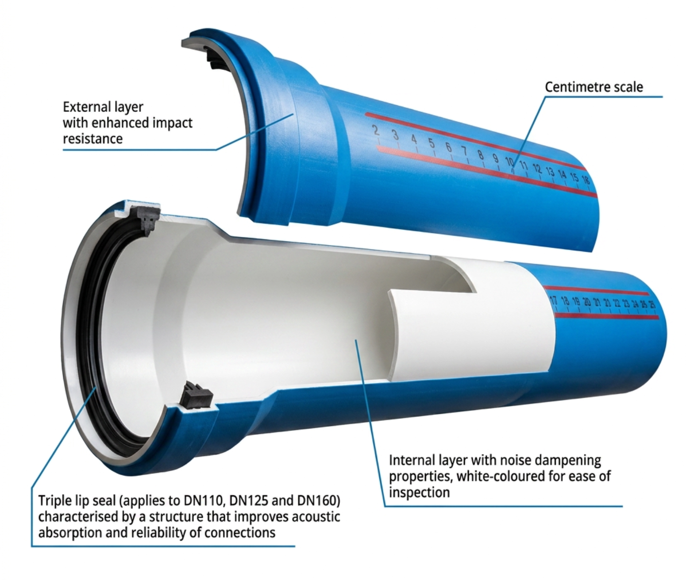

Low-noise performance
The multi-layer construction reduces flow noise to as low as 16 dB at 4 l/s.
Low Noise SWV System
A mineral-reinforced polypropylene drainage system engineered for quiet operation in multi-storey buildings.

Polyduct is a low-noise soil, waste and ventilation system made from a proprietary blend of polypropylene (PP-MD) and mineral additives. The multi-layer construction reduces flow noise, resists high temperatures and resists chemical attack — suitable for hotels, hospitals, residential towers and premium residential developments.
Technical information is presented openly. Essential information is not hidden behind an accordion.
| Material | Unique recipe of polypropylene (PP-MD) + mineral additives. |
|---|---|
| Appearance | Internal layer (white) ensures resistance to high temperatures up to +90 °C, +95 °C for a short-term flow, high chemical resistance, and reduction of noise level. External layer (blue, smooth surface) ensures resistance to external stress, impacts and atmospheric conditions. |
| Standards & Specifications | EN 14758-1:2012; EN 1451-1:2018-02 |
| Available Range | Diameters of 50, 75, 110, 125, 160 and 200 mm. A wide range of compatible imported fittings is available. |
| Jointing Method | Jointing lip seals made of a rubber-based compound are used to connect the system components with one another. |
The multi-layer construction reduces flow noise to as low as 16 dB at 4 l/s.
Handles a wide range of temperatures (–20 °C to +95 °C) and pH levels between 2 and 12.
Manufactured to EN 14758-1:2012 and EN 1451-1:2018-02. Contact Dadex Techno Commercial for assistance.
Approved product literature, technical documents and drawings can be connected here as the resource library is finalized.
Contact Dadex for product information and technical assistance.